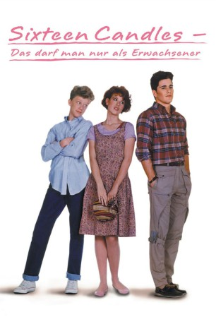

#10720 Das Darf man nur als Erwachsener
Alternativ: Sixteen Candles (Englischer Titel)
 
 IMDB-Wertung: 7.1 / 10
IMDB-Wertung: 7.1 / 10  Metascore: 61
Metascore: 61 
Samanthas Eltern planen die Hochzeit ihrer älteren Tochter. So vergessen sie den 16. Geburtstag ihrer zweiten Tochter Samantha, die sich natürlich vernachlässigt fühlt. Ablenkung verschafft ihr der tolle Jake, in den sie sich verliebt hat. Aber da ist auch noch der schüchterne Ted, der nur Augen für Samantha hat...
Jahr: 1984
Dauer: 92 Minuten
FSK: 16
Land: USA Studio: Universal PicturesTonspuren:
Untertitel:
Auflösung: 1080p (1920x1040) Größe: 6717 MB
Genre: Komödie, Liebe
Regisseur:  John Hughes
John Hughes
Drehbuch: John Hughes
Soundtrack: Ira Newborn
Darsteller:
- Molly Ringwald als Samantha
- Justin Henry als Mike Baker
- Michael Schoeffling als Jake
- Haviland Morris als Caroline
 Gedde Watanabe als Long Duk Dong
Gedde Watanabe als Long Duk Dong Anthony Michael Hall als Geek
Anthony Michael Hall als Geek Paul Dooley als Jim Baker
Paul Dooley als Jim Baker- Carlin Glynn als Brenda Baker
- Blanche Baker als Ginny
 Edward Andrews als Howard
Edward Andrews als Howard Billie Bird als Dorothy
Billie Bird als Dorothy- Carole Cook als Helen
 Max Showalter als Fred
Max Showalter als Fred- Liane Curtis als Randy
 John Cusack als Bryce
John Cusack als Bryce- Debbie Pollack als Lumberjack
- Jonathan Chapin als Jimmy Montrose
 Joan Cusack als Geek Girl #1
Joan Cusack als Geek Girl #1 Brian Doyle-Murray als Reverend
Brian Doyle-Murray als Reverend Jami Gertz als Robin
Jami Gertz als Robin- Frank Howard als Freshman
 John Kapelos als Rudy
John Kapelos als Rudy Tony Longo als Rock
Tony Longo als Rock- Steve Monarque als Jock
- Zelda Rubinstein als Organist
- Elizabeth Cox als High School Student (uncredited)
- Sven Granlund als Extra (uncredited)
- Andy Hirsch als Boy with Coronet (uncredited)
- Powerful Pexster als Student Breakers (uncredited)
- Jennifer Scott als Wall Flower (uncredited)
- James Vallo als Bandie (uncredited)
- Darren Harris als Cliff
- Ross Berkson als Ray Gun Geek #1
- Bekka Eaton als Female D.J.
- Pamela Elser als Shower Double
- Steven Farber als Ray Gun Geek #2
- Cinnamon Idles als Sara
- Marge Kotlisky als Irene
- Bill Orsi als Bruno
- Beth Ringwald als Patty
- Dennis Vero als Bus Driver
- Elaine Wilkes als Tracy
- Agnes Belushi als Wedding guest (uncredited)
- James Huffman als Student in Crowd (uncredited)
- Stephan Meyers als Geek at Dance (uncredited)
- Robert Minkoff als Bit (uncredited)
- New York City Breakers als students Breakers (uncredited)
- Erika Pearson als Student (uncredited)
- Joe Pressel als Newspaper Delivery Man (uncredited)
Datei: X:\1984\Darf man nur als Erwachsener, Das (1984, FSK16, 1920x1040).mkv seit 22.02.2019
Festplatte: HD 1980-1986
 Es gibt insgesamt 46 Filme in der Gruppe '1984'
Es gibt insgesamt 46 Filme in der Gruppe '1984'